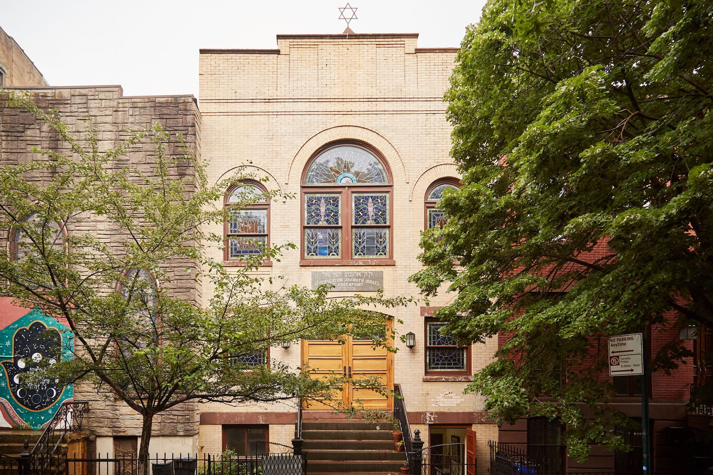

To learn more about Orthodox Judaism, I spent a week and a half in Brooklyn, New York, home to over 800,000 Jews. During this week, I was able to celebrate Yom Kippur with the locals, which helped me tremendously in understanding Jewish culture. I was lucky enough to meet Shira Adelstein, a girl of my age who guided me through the city. If you come across her, feel free to say hello!
I arrived in New York at LaGuardia airport, which actually blew me away. It was so fancy! I was super mesmerized by the fountain at Terminal B. I may have lost track of time at the airport and missed the morning service at the synagogue I was going to visit in Greenpoint. It worked out pretty well though, as hadn't I been distracted, I wouldn't have met Shira while asking for some directions.
About Shira
Shira actually lived in Illinois for most of her childhood before moving to New York for her parents' work. She, a reform Jew, has a unique perspective as she was able to compare between many different branches of Judaism as she moved. As a local herself, she also showed me many great places to eat—she's a bit of a foodie.
Creed
I was able to experience a synagogue service in the morning with Shira at the Greenpoint Shul. There, I sat in the womens' section. Everyone was extremely nice and welcoming! I was able to hear the Shema for myself, which is an equivalent to the Apostles Creed in Christianity. The Shema is a way for believers to declare their faith in God. Everybody started off by thanking God for creation as well as the revelation. They then read the Shema from their prayer books, which consists of Deuteronomy 6:4–9, Deuteronomy 11:13–21 and Numbers 15:37–41. They all end by thanking God for redemption which closes the morning Shema.

Code
Shira first told me about the laws that Jews are to follow while she toured me around Greenpoint. Contained in the Torah, one of the hold books of the Jewish bible, are 613 laws, which range from commentating on morals to clothing to diets. Depending on the type of branch of Judaism the individual follows, how closely they follow these laws varies.
As a reform Jew herself, Shira does not literally follow all these laws, rather adapting them to her present life. Hasidic Jews, however, follow the Torah exactly. A large population of them live around this area in Greenpoint. Shira pointed out to me their clothing as an external example of their way of living. Women are only seen wearing modest dresses. The men are all wearing black suits with a kippot, shtreimel or a black hat.
Cult
Shira was kind enough to invite me to observe Shabbat with her family. Shabbat is the rest day for Jews, which started at 6:14 PM on Friday and ended at 7:11 PM on Saturday. As a day of rest, Jews on Shabbat do no form of work, including things such as even flicking a light switch or heating up food. In this day and age, Jews diligently prepare for Shabbat before it begins. A few days prior, Shira showed me how her family would typically prepare for Shabbat. Everything from the food to the clothes are prepared beforehand. Shira's family has a special mode on her oven that keeps her premade food warm without the need for her to adjust the temperature of the oven, which is prohibited. We would all eat together with the table beautifully set with all sorts of food.
This is quite similar to our observance of the Sabbath day on Sunday for Christians. Both represent the day that God rested after He created the world.
Community
I came in time on this trip to experience Yom Kippur firsthand—the holiest day of the year for Jews. I was without Shira at this point, as she had to celebrate with her family as well. On that day, I was able to observe the changes around Greenpoint. All the businesses in the area had closed. I would only see people travelling by bike, as like Shabbat, no work is to be done. I also saw that some people were wearing white robes, which I found out later from Shira that the garment was called a kittel. It is a piece of clothing to resemble angels and represent purity, a big theme during Yom Kippur.
Around sunset, I heard a majestic sound of a horn. I would learn that this horn is called the shofar and has a connection to the purpose of Yom Kippur, being the commemoration of the Israelites' exodus. The shofar being blown indicated that they were now free from the Egyptians. Not many people were outside, especially during the morning as they were attending their five prayer services at the synagogue. Shira was so excited to tell me how she was able to successfully fast for the entire length this year, meaning that she met the full requirements in afflicting her soul. Yom Kippur is a day of atonement, focused on spiritual well being above all other work. She was extremely happy to have done it and came out really in peace afterwards. It's a beautiful celebration.
What a Great Visit!
Thank you Shira for helping me around the place. Greenpoint is a really lovely town with equally lovely people. This trip helped me learn so much about Judaism as well. Everybody was so welcoming and open to any questions I have. See you soon, Greenpoint!